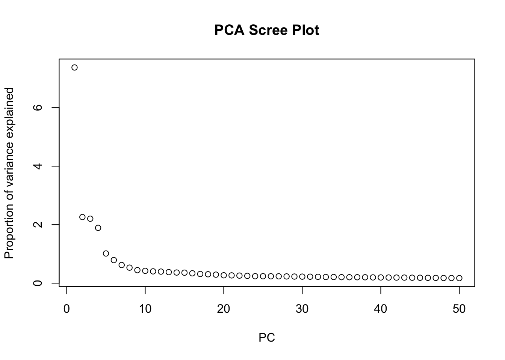
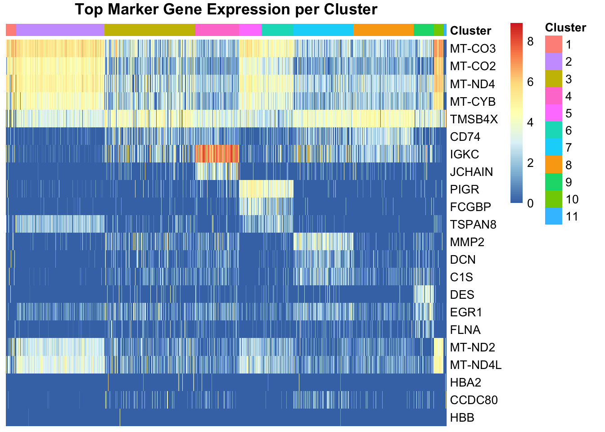
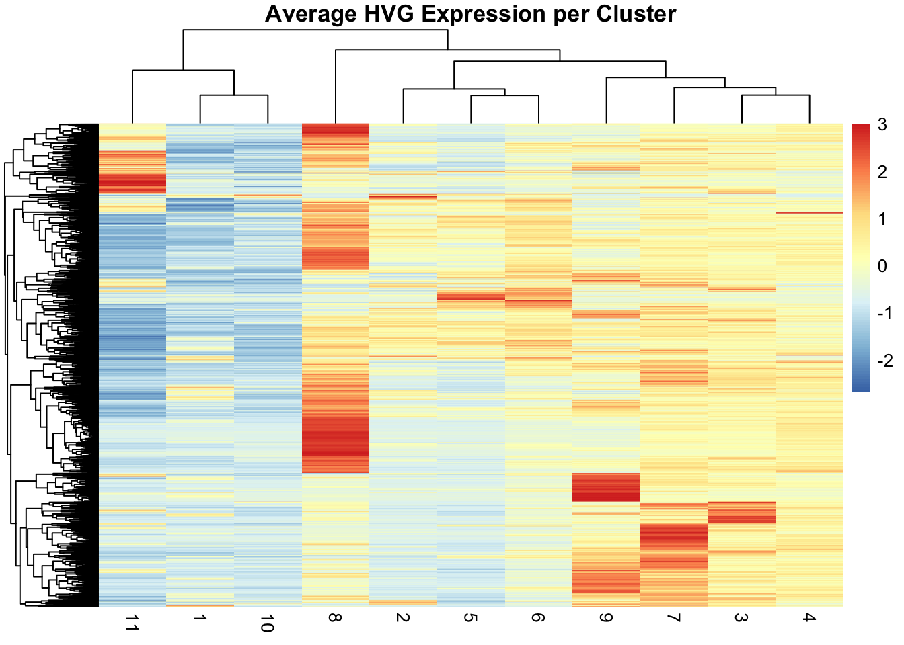

library(SpatialExperiment)
library(qs2)
library(scran) # For feature selection and clustering
library(scater) # For dimensionality reduction
library(ggplot2)
library(patchwork) # For combining plots
library(bluster) # For clustering
library(escheR) # For spatial plotting
library(pheatmap) # For clustering heatmapExercise 3
Feature Selection, Dimensionality Reduction, and Clustering
In this third exercise, we will explore the essential techniques of feature selection, dimensionality reduction, and clustering to uncover meaningful biological insights from spatial transcriptomics data. We will learn how to identify the most informative genes, visualize complex high-dimensional data in lower-dimensional spaces using methods like PCA and UMAP, and group spots into clusters representing distinct spatial domains. These steps are fundamental for interpreting the underlying biological structure of the tissue.
Learning Objectives
By the end of this exercise, you will be able to:
- Perform feature selection to identify highly variable genes (HVGs).
- Apply dimensionality reduction techniques like PCA and UMAP.
- Perform clustering to identify distinct spatial domains or cell populations.
- Visualize the results of dimensionality reduction and clustering in both reduced dimension space and spatial context.
Libraries
Load and Prepare Data
We will start by loading the SpatialExperiment object and performing the necessary preprocessing steps, including subsetting for demonstration purposes, similar to the previous exercise.
# Load the SpatialExperiment object from the .qs2 file.
spe <- qs2::qs_read("results/01_spe.qs2", nthreads = 1)
# Change row names from gene IDs to gene symbols.
rownames(spe) <- rowData(spe)$Symbol
# Identify mitochondrial transcripts.
is.mito <- rownames(spe)[grepl("^MT-", rownames(spe))]
# Calculate per-spot QC metrics.
spe <- scuttle::addPerCellQCMetrics(spe, subsets = list(Mito = is.mito))Loading required namespace: HDF5Array# Subsetting for Demonstration (to reduce computation time)
set.seed(123) # for reproducibility
num_genes_to_keep <- 10000
if (nrow(spe) > num_genes_to_keep) {
gene_indices <- sample(seq_len(nrow(spe)), num_genes_to_keep)
spe_subset <- spe[gene_indices, ]
} else {
spe_subset <- spe
}
num_spots_to_keep <- 10000
if (ncol(spe_subset) > num_spots_to_keep) {
spot_indices <- sample(seq_len(ncol(spe_subset)), num_spots_to_keep)
spe_subset <- spe_subset[, spot_indices]
} else {
spe_subset <- spe_subset
}
spe <- spe_subset
# Remove spots with NA/NaN/Inf in mitochondrial QC metrics or spatial coordinates
na_mito_percent <- is.na(colData(spe)$subsets_Mito_percent)
na_mito_sum <- is.na(colData(spe)$subsets_Mito_sum)
spots_to_remove_mito <- na_mito_percent | na_mito_sum
if (any(spots_to_remove_mito)) {
message(paste0("Removing ", sum(spots_to_remove_mito), " spots with NA mitochondrial QC metrics."))
spe <- spe[, !spots_to_remove_mito]
}Removing 25 spots with NA mitochondrial QC metrics.spatial_coords <- spatialCoords(spe)
problematic_spatial_coords <- apply(spatial_coords, 1, function(row) any(is.na(row) | is.nan(row) | is.infinite(row)))
if (any(problematic_spatial_coords)) {
message(paste0("Removing ", sum(problematic_spatial_coords), " spots with NA/NaN/Inf in spatial coordinates."))
spe <- spe[, !problematic_spatial_coords]
}
# Remove spots with zero total counts, as these can cause issues with size factor calculation during normalization.
zero_sum_spots <- colSums(counts(spe)) == 0
if (any(zero_sum_spots)) {
message(paste0("Removing ", sum(zero_sum_spots), " spots with zero total counts."))
spe <- spe[, !zero_sum_spots]
}Removing 62 spots with zero total counts.# Log-normalize counts for downstream analysis
spe <- logNormCounts(spe)Spatially-Aware Normalization (Optional)
While logNormCounts provides a general-purpose normalization, specialized spatially-aware normalization methods exist (e.g., SpaNorm package). These methods aim to correct for technical variations while preserving true spatial biological patterns. Depending on the dataset and research question, exploring such advanced normalization techniques might be beneficial.
Size Factor Analysis
- After log-normalization, we can inspect the computed size factors.
- Size factors account for differences in sequencing depth between spots.
# Display a summary of the calculated size factors.
summary(sizeFactors(spe)) Min. 1st Qu. Median Mean 3rd Qu. Max.
0.008285 0.215407 0.671077 1.000000 1.433288 8.052924 # Visualize the distribution of size factors using a histogram.
hist(sizeFactors(spe),
breaks = 50, main = "Histogram of Size Factors",
xlab = "Size Factor"
)
# Display the dimensions of the prepared object
dim(spe)[1] 10000 9913Feature Selection
Highly Variable Genes (HVGs)
Feature selection is a crucial step to reduce noise and focus on genes that show significant biological variation across spots. We typically identify Highly Variable Genes (HVGs) as these are more likely to distinguish different cell types or spatial domains.
# Model gene variance to identify highly variable genes.
# This function fits a trend to the technical noise and calculates biological variance.
dec <- modelGeneVar(spe)
# Select the top N highly variable genes.
# The number of HVGs can influence downstream dimensionality reduction and clustering.
hvg <- getTopHVGs(dec, n = 2000) # Selecting top 2000 HVGs
# Store HVG information in rowData
rowData(spe)$hvg <- rowData(spe)$Symbol %in% hvg
# Display the number of HVGs identified
sum(rowData(spe)$hvg)[1] 2000# Visualize the mean-variance relationship and the fitted trend.
# This plot helps to understand how gene variability changes with expression level.
plot(dec$mean, dec$total,
xlab = "Mean expression (log-counts)",
ylab = "Total variance (log-counts)",
main = "Mean-Variance Trend"
)
curve(metadata(dec)$trend(x), add = TRUE, col = "dodgerblue", lwd = 2)
Question 1
Why is it important to perform feature selection (e.g., identifying HVGs) before dimensionality reduction and clustering in spatial transcriptomics data?
Answer
Feature selection is important for several reasons:
- Noise Reduction: It helps to filter out genes that show little variation and are likely dominated by technical noise, thus improving the signal-to-noise ratio.
- Computational Efficiency: Reducing the number of features (genes) significantly decreases the computational burden for subsequent steps like dimensionality reduction and clustering, especially with large datasets.
- Improved Interpretation: By focusing on genes with high biological variability, we are more likely to identify meaningful biological patterns and distinctions between cell types or spatial domains.
- Mitigating the Curse of Dimensionality: High-dimensional data can make it difficult for algorithms to find meaningful patterns; feature selection helps alleviate this.
Spatially Variable Genes (SVGs)
Beyond simply highly variable genes, in spatial transcriptomics, we are often interested in genes whose expression patterns vary significantly across the spatial dimensions. These are known as Spatially Variable Genes (SVGs).
Identifying SVGs can reveal genes that define distinct tissue regions, cell types, or biological processes with specific spatial localization.
While several advanced methods and packages exist for SVG identification (e.g., nnSVG, SPARK-X, Giotto), implementing a full SVG analysis is beyond the scope of this introductory exercise. However, it’s important to be aware of this concept as a crucial step in spatial data analysis.
Question 1.2
How do Spatially Variable Genes (SVGs) differ from Highly Variable Genes (HVGs), and why is identifying SVGs particularly important in spatial transcriptomics?
Answer
- HVGs (Highly Variable Genes): Genes that show high variability in expression across all spots/cells in a dataset, regardless of their spatial location. They are informative for distinguishing cell types or states in a general sense.
- SVGs (Spatially Variable Genes): Genes whose expression levels exhibit a non-random, structured pattern across the spatial coordinates of the tissue. Their variability is specifically linked to their position.
Identifying SVGs is particularly important in spatial transcriptomics because:
- Reveals Spatial Organization: SVGs directly highlight genes that contribute to the spatial organization of the tissue, defining distinct anatomical regions or functional domains.
- Biological Insights: They can pinpoint genes involved in cell-cell communication, developmental gradients, or disease progression within a tissue context.
- Targeted Analysis: SVGs can be used for more targeted downstream analysis, focusing on genes that are most relevant to the spatial biology of interest.
Dimensionality Reduction
Dimensionality reduction techniques project high-dimensional gene expression data into a lower-dimensional space, making it easier to visualize and analyze. This step is essential for identifying global patterns and preparing data for clustering.
Principal Component Analysis (PCA)
PCA is a linear dimensionality reduction technique that transforms the data into a new coordinate system such that the greatest variance by some projection of the data comes to lie on the first coordinate (called the first principal component), the second greatest variance on the second coordinate, and so on.
# Run PCA on the highly variable genes.
# We use the 'ncomponents' argument to specify the number of principal components to retain.
spe <- runPCA(spe, ncomponents = 50, subset_row = rowData(spe)$hvg)
# Visualize the explained variance by each principal component.
# This helps in determining how many PCs capture most of the variance.
plot(attr(reducedDim(spe, "PCA"), "percentVar"),
xlab = "PC", ylab = "Proportion of variance explained",
main = "PCA Scree Plot"
)
# Visualize the PCA embedding.
# This helps to see the main sources of variation in the data.
plotPCA(spe, colour_by = "sum") +
ggtitle("PCA colored by Library Size")
Question 2
Based on the PCA scree plot, how would you determine an appropriate number of principal components to retain for downstream analysis? What are the trade-offs of choosing too few or too many PCs?
Answer
An appropriate number of principal components (PCs) can often be determined by looking for an “elbow point” in the scree plot, where the explained variance starts to level off. This point suggests that subsequent PCs explain much less variance and might represent noise rather than meaningful biological signal.
- Too few PCs: Might lead to a loss of important biological signal, as significant sources of variation could be discarded.
- Too many PCs: Can retain too much noise, potentially obscuring true biological patterns and increasing computational complexity for downstream steps like clustering.
t-Distributed Stochastic Neighbor Embedding (t-SNE)
t-SNE is another non-linear dimensionality reduction technique particularly well-suited for visualizing high-dimensional datasets. It aims to place similar data points close together in a low-dimensional map, while dissimilar points are placed far apart. It is especially good at revealing local structures in the data.

Question 2.2
How does t-SNE differ from UMAP in its approach to dimensionality reduction, and what are the implications for interpreting their respective visualizations?
Answer
t-SNE and UMAP are both non-linear dimensionality reduction techniques that aim to preserve local and global data structures. However, they differ in their underlying algorithms and how they balance these aspects:
- t-SNE: Focuses heavily on preserving local neighborhoods. It tends to create tightly packed clusters, but the distances between clusters in a t-SNE plot are often not meaningful. It can be computationally more intensive for very large datasets.
- UMAP: Aims to preserve both local and global structures more effectively than t-SNE. Distances between clusters in a UMAP plot are generally considered more meaningful, and it is often faster and scales better to larger datasets.
Implications for interpretation:
- t-SNE: Excellent for revealing distinct, compact clusters. However, the relative sizes of clusters and distances between them should be interpreted with caution.
- UMAP: Often provides a more faithful representation of the overall data topology, making inter-cluster distances and relative densities more interpretable. It can sometimes produce more diffuse clusters than t-SNE.
Choosing between them often depends on the specific goals of the visualization and the characteristics of the data.
Uniform Manifold Approximation and Projection (UMAP)
UMAP is a non-linear dimensionality reduction technique that is particularly effective at preserving both local and global data structure, making it popular for visualizing complex single-cell and spatial transcriptomics data.
# Run UMAP on the PCA-reduced data.
# Using PCA output as input to UMAP is a common practice to denoise the data first.
spe <- runUMAP(spe, dimred = "PCA")
# Visualize the UMAP embedding.
# We can color the points by various metadata, for example, by library size.
plotUMAP(spe, colour_by = "sum") +
ggtitle("UMAP colored by Library Size")
Question 3
Compare and contrast PCA and UMAP. In what scenarios would you prefer to use one over the other for visualizing spatial transcriptomics data?
Answer
- PCA (Principal Component Analysis): A linear method that identifies directions of maximal variance. It’s good for understanding global variance and can be interpreted as a denoising step. It preserves large-scale structures but can compress complex non-linear relationships.
- UMAP (Uniform Manifold Approximation and Projection): A non-linear method that aims to preserve both local and global data structure. It’s excellent for visualizing complex, high-dimensional data in 2D or 3D, often revealing distinct clusters more clearly.
When to use which:
- Prefer PCA: For initial data exploration, denoising, and when linearity is assumed or desired. It’s also useful for understanding the main sources of variation.
- Prefer UMAP: For visualizing complex relationships, identifying distinct clusters, and when non-linear structures are expected. It’s often used after PCA to further reduce dimensions for visualization.
For spatial transcriptomics, UMAP is often preferred for visualization due to its ability to reveal distinct spatial domains or cell types that might have non-linear relationships in gene expression.
Clustering
Clustering aims to group spots with similar gene expression profiles, which can correspond to distinct cell types or tissue regions. We will use a graph-based clustering approach, which is common in single-cell and spatial analyses. Other methods like k-means or hierarchical clustering are also available but may have different assumptions or computational properties.
# Build a Shared Nearest Neighbor (SNN) graph based on the PCA-reduced data.
# The k parameter defines the number of nearest neighbors to consider.
snn_graph <- buildSNNGraph(spe, k = 10, use.dimred = "PCA")
# Perform clustering on the SNN graph using the Walktrap algorithm.
# The 'cluster_walktrap' function from igraph (used via bluster) is a common choice.
clusters <- igraph::cluster_walktrap(snn_graph)$membership
# Add the cluster assignments to the colData of the SpatialExperiment object.
colData(spe)$clusters <- factor(clusters)
# Display the number of spots in each cluster
table(colData(spe)$clusters)
1 2 3 4 5 6 7 8 9 10 11 12 13 14 15 16
378 971 2298 2301 733 85 54 28 783 130 904 336 57 66 15 22
17 18 19 20 21 22 23 24 25 26 27 28 29 30 31 32
177 36 32 28 15 27 44 17 14 27 23 40 21 12 102 13
33 34 35 36 37 38
21 34 22 22 16 9 ### Evaluating Cluster Quality with Silhouette Scores
# Silhouette scores provide a measure of how similar an object is to its own cluster
# compared to other clusters. Values range from -1 (poor) to +1 (good).
# Calculate silhouette scores. Requires the 'cluster' package.
library(cluster)
sil <- silhouette(clusters, dist(reducedDim(spe, "PCA")))
# Summarize silhouette scores
summary(sil)Silhouette of 9913 units in 38 clusters from silhouette.default(x = clusters, dist = dist(reducedDim(spe, "PCA"))) :
Cluster sizes and average silhouette widths:
378 971 2298 2301 733 85
-0.18409593 -0.01823542 -0.28903760 0.05662016 0.84972350 0.03572011
54 28 783 130 904 336
-0.03895411 0.43055504 -0.13575931 0.26518486 -0.18824899 -0.17851550
57 66 15 22 177 36
0.32912286 0.25506870 0.21067186 -0.07400704 0.10054841 0.11714320
32 28 15 27 44 17
0.23941870 0.15522279 0.59778612 0.43560937 0.15172621 0.24988242
14 27 23 40 21 12
0.36360026 0.30704386 0.63943466 -0.17375372 0.15415070 0.34907616
102 13 21 34 22 22
0.21252747 0.62981027 0.49313559 0.20666208 0.54667074 0.39994482
16 9
0.70559045 1.00000000
Individual silhouette widths:
Min. 1st Qu. Median Mean 3rd Qu. Max.
-0.788313 -0.221986 -0.087331 -0.006824 0.145734 1.000000 # Plot silhouette scores (optional, can be very dense for many spots)
# plot(sil, main = "Silhouette Plot")Question 4
How might you determine an optimal number of clusters for your spatial transcriptomics data? What are the challenges in interpreting clusters in a spatial context?
Answer
Determining the optimal number of clusters is often an iterative process and can involve:
- Visual Inspection: Plotting clusters on UMAP and in spatial coordinates to see if they form coherent groups.
- Biological Knowledge: Aligning clusters with known tissue structures or cell types.
-
Statistical Metrics: Using metrics like silhouette scores, Davies-Bouldin index, or gap statistics. The
blusterpackage, for instance, provides functions likepairwiseRandorpairwiseJaccardto compare different clusterings, andsilhouettefromclusterpackage can be used to evaluate cluster cohesion and separation. While a full implementation is beyond this exercise, these metrics provide quantitative ways to assess cluster quality. - Resolution Parameter: For graph-based clustering, adjusting the resolution parameter can influence the number of clusters.
Challenges in interpreting clusters in a spatial context:
- Spatial Heterogeneity: Clusters might not always correspond to perfectly contiguous spatial regions, especially if cell types are intermingled.
- Technical Artifacts: Clusters might sometimes reflect technical variations (e.g., batch effects, poor quality regions) rather than true biological differences.
- Resolution Mismatch: The resolution of clustering might not perfectly match the biological resolution of the tissue.
- Defining Boundaries: It can be challenging to define clear boundaries between spatially adjacent clusters.
Marker Gene Identification
After identifying clusters, a crucial step is to characterize them by finding marker genes – genes that are highly expressed or uniquely expressed in one cluster compared to others. This helps in assigning biological identities to the discovered spatial domains.
# Identify marker genes for each cluster using findMarkers from scran.
# We compare each cluster against all other clusters.
markers <- findMarkers(spe, groups = colData(spe)$clusters, test.type = "wilcox", direction = "up")
# Display top markers for the first few clusters.
# For example, top 5 markers for Cluster 1.
# Note: The output structure of findMarkers can be complex; this is a simplified view.
if ("1" %in% names(markers)) {
head(markers[["1"]], n = 5)
}DataFrame with 5 rows and 41 columns
Top p.value FDR summary.AUC AUC.2 AUC.3
<integer> <numeric> <numeric> <numeric> <numeric> <numeric>
MT-CO2 1 8.78855e-229 4.39601e-225 1.000000 0.952862 0.981186
TMSB4X 1 3.93464e-82 4.91830e-79 0.803946 0.532081 0.444176
MT-CYB 1 8.79203e-229 4.39601e-225 1.000000 0.874230 0.967966
FTH1 1 6.38639e-52 5.32199e-49 0.645503 0.482021 0.480276
MT-ND4L 2 2.20521e-137 3.67536e-134 0.880739 0.794136 0.867739
AUC.4 AUC.5 AUC.6 AUC.7 AUC.8 AUC.9 AUC.10
<numeric> <numeric> <numeric> <numeric> <numeric> <numeric> <numeric>
MT-CO2 0.928156 1.000000 0.169265 0.354326 1.00000000 0.999165 1.000000
TMSB4X 0.464394 0.803946 0.615686 0.612703 0.68594104 0.498545 0.672853
MT-CYB 0.873861 1.000000 0.311485 1.000000 1.00000000 0.984299 0.999878
FTH1 0.364371 0.645503 0.627747 0.645503 0.00292895 0.391531 0.604701
MT-ND4L 0.721917 0.880739 0.343184 0.706619 0.83512850 0.886112 0.885429
AUC.11 AUC.12 AUC.13 AUC.14 AUC.15 AUC.16 AUC.17
<numeric> <numeric> <numeric> <numeric> <numeric> <numeric> <numeric>
MT-CO2 0.989629 0.995748 1.000000 0.0302429 1.000000 1.000000 0.999619
TMSB4X 0.424037 0.780593 0.791028 0.6265833 0.911376 0.751203 0.561803
MT-CYB 0.957360 0.943169 1.000000 0.1911175 0.000000 0.000000 0.996973
FTH1 0.436994 0.598376 0.613060 0.6216130 0.645503 0.645503 0.450117
MT-ND4L 0.869605 0.874551 0.854265 0.2183141 0.925926 0.648870 0.906825
AUC.18 AUC.19 AUC.20 AUC.21 AUC.22 AUC.23 AUC.24
<numeric> <numeric> <numeric> <numeric> <numeric> <numeric> <numeric>
MT-CO2 1.000000 0.0283978 0.815193 0.000000 1.0000000 1.000000 0.00529101
TMSB4X 0.701426 0.7179646 0.725246 0.911376 0.7787086 0.718434 0.85776533
MT-CYB 0.967188 1.0000000 1.000000 1.000000 0.0225848 1.000000 1.00000000
FTH1 0.645503 0.6455026 0.601285 0.645503 0.6455026 0.632786 0.64550265
MT-ND4L 0.900573 0.7621114 0.756472 0.925926 0.7898295 0.904942 0.81886088
AUC.25 AUC.26 AUC.27 AUC.28 AUC.29 AUC.30 AUC.31
<numeric> <numeric> <numeric> <numeric> <numeric> <numeric> <numeric>
MT-CO2 1.000000 1.000000 1.000000 1.000000 0.1119929 1.000000 0.919883
TMSB4X 0.846277 0.686410 0.661433 0.613922 0.7083648 0.767967 0.455895
MT-CYB 1.000000 0.984666 1.000000 0.139418 0.0130385 1.000000 0.884687
FTH1 0.000000 0.645503 0.645503 0.645503 0.6455026 0.645503 0.394867
MT-ND4L 0.925926 0.895895 0.886703 0.712136 0.6168430 0.875772 0.775249
AUC.32 AUC.33 AUC.34 AUC.35 AUC.36 AUC.37 AUC.38
<numeric> <numeric> <numeric> <numeric> <numeric> <numeric> <numeric>
MT-CO2 1.000000 0.00138574 1.000000 0.945587 0.982383 1.000000 0.000000
TMSB4X 0.911376 0.82457798 0.768674 0.451058 0.789502 0.854415 0.911376
MT-CYB 1.000000 1.00000000 1.000000 0.121392 1.000000 0.000000 1.000000
FTH1 0.645503 0.64550265 0.645503 0.645503 0.645503 0.645503 0.645503
MT-ND4L 0.854701 0.83774250 0.900560 0.447932 0.837602 0.868056 0.925926# To visualize marker genes, one common approach is a heatmap of top markers across clusters.
# For simplicity, let's select the top 3 markers for each cluster and plot their expression.
# Get top markers for each cluster
top_markers_list <- lapply(names(markers), function(cl_id) {
current_markers <- markers[[cl_id]]
if (nrow(current_markers) > 0) {
current_markers <- current_markers[order(current_markers$FDR,
-current_markers$summary.AUC), ]
head(rownames(current_markers), 3)
} else {
NULL
}
})
# Flatten the list and remove NULLs
top_markers <- unique(unlist(top_markers_list))
# Ensure we have some markers to plot
if (length(top_markers) > 0) {
# Get expression for these top markers
marker_expr <- logcounts(spe)[top_markers, ]
# Order spots by cluster for better visualization
spot_order <- order(colData(spe)$clusters)
marker_expr_ordered <- marker_expr[, spot_order]
cluster_labels_ordered <- colData(spe)$clusters[spot_order]
# Create annotation for heatmap
annotation_col <- data.frame(Cluster = cluster_labels_ordered)
rownames(annotation_col) <- colnames(marker_expr_ordered)
# Plot heatmap
pheatmap(marker_expr_ordered,
cluster_rows = FALSE,
cluster_cols = FALSE,
show_colnames = FALSE,
annotation_col = annotation_col,
main = "Top Marker Gene Expression per Cluster"
)
} else {
message("No marker genes found to plot.")
}
Question 5
How can identifying marker genes help in the biological interpretation of the discovered spatial clusters?
Answer
Identifying marker genes is crucial for biological interpretation because:
- Assigning Identity: Marker genes can be used to assign biological identities (e.g., cell types, tissue regions) to the computationally derived clusters by comparing them to known gene expression signatures.
- Understanding Function: The functions of marker genes can provide insights into the biological processes or pathways active within each cluster.
- Validation: Marker genes can be used to validate the clustering results against existing biological knowledge or independent experiments.
- Further Research: They can serve as starting points for further investigation into the unique characteristics and roles of each spatial domain.
Visualization of Results
Visualizing the dimensionality reduction and clustering results is crucial for interpreting the biological insights from your spatial transcriptomics data.
# Visualize clusters on the UMAP embedding.
# This helps to see how well distinct clusters are separated in the reduced dimension space.
plotUMAP(spe, colour_by = "clusters") +
ggtitle("UMAP colored by Clusters")
# Visualize clusters in the spatial context.
# This allows us to see the spatial distribution of the identified clusters.
# We use escheR for enhanced spatial plotting.
escheR::make_escheR(spe) |>
escheR::add_fill(var = "clusters", point_size = 1.5) +
ggtitle("Spatial Clusters")
Clustering Heatmap
A heatmap of gene expression across the identified clusters can help to visualize the distinct transcriptional profiles that define each cluster. We will plot the expression of the top highly variable genes (HVGs) across the clusters.
# Calculate average expression of HVGs per cluster.
# First, get the expression matrix for HVGs.
hvg_expr <- logcounts(spe)[rowData(spe)$hvg, ]
# Aggregate expression by cluster.
# We need to ensure that the cluster labels are correctly aligned with the columns of hvg_expr.
cluster_avg_expr <- aggregate(t(hvg_expr), by = list(cluster = colData(spe)$clusters), FUN = mean)
# Convert to a matrix and set row names to cluster IDs.
rownames(cluster_avg_expr) <- cluster_avg_expr$cluster
cluster_avg_expr <- as.matrix(cluster_avg_expr[, -1])
# Transpose the matrix so genes are rows and clusters are columns for pheatmap.
cluster_avg_expr <- t(cluster_avg_expr)
# Scale the rows (genes) for better visualization in the heatmap.
cluster_avg_expr_scaled <- t(scale(t(cluster_avg_expr)))
# Plot the heatmap.
pheatmap(cluster_avg_expr_scaled,
cluster_rows = TRUE,
cluster_cols = TRUE,
show_rownames = FALSE, # Don't show all gene names if there are many
main = "Average HVG Expression per Cluster"
)
Important
Key Takeaways:
- Feature selection (HVGs) reduces noise and improves computational efficiency.
- PCA provides a linear view of major variance, while UMAP and t-SNE offer a non-linear, often more visually distinct, representations.
- Graph-based clustering helps identify groups of spots with similar gene expression.
- Identifying marker genes helps in the biological interpretation and annotation of clusters.
- Visualizing clusters in both reduced dimension space and spatial context is essential for biological interpretation.